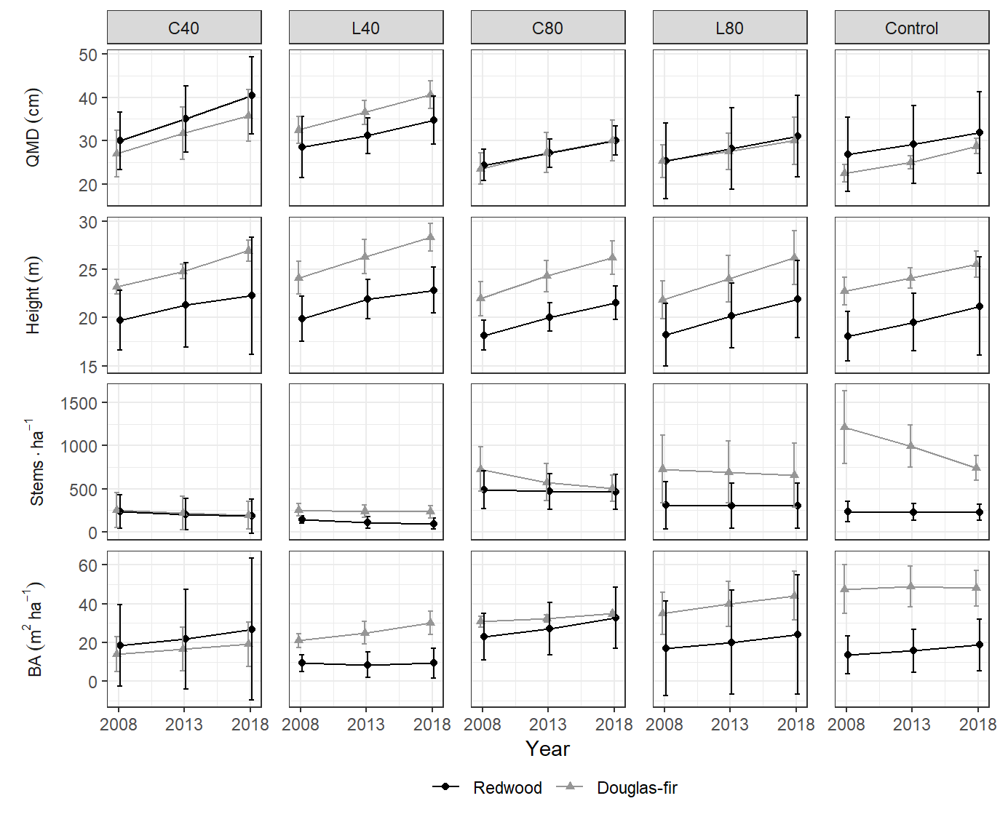
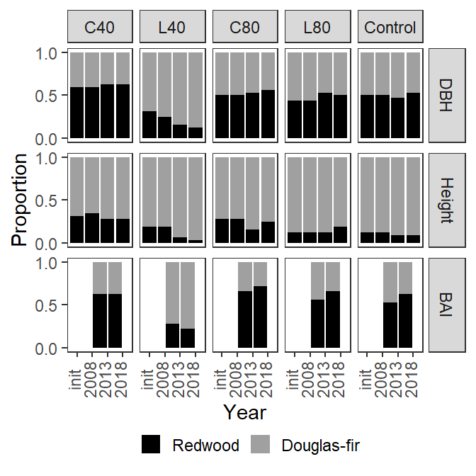

library(tidyverse)
library(dplyr)I’m making the assumption now that all trees recorded as cut were alive in the initial conditions. For all of the following I use trees with status 1, 2, 3, 15, 16. Fifteen and 16 are cut trees, but in the long data format, they only occur on entries where year = “init” so they do not affect other periods. Status 1, 2 and 3 represent second-growth, advanced regen, and old-growth, respectively.
Generally, the summarise() command in each section defines the output of a given measure. The mutate() command is also used for calculating new columns. Calculations are done by grouping levels (generally by treatment, by year).
# I'll store all my metrics in this list
measures <- list()I’ll look at a quick summary of quartiles of the number of tree observations by plot for each year. Initial plots had between 83 and 164 observations and subsequent years are roughly parallel. Density is being calculated for all live trees, including those broken above dbh.
d_l %>%
filter(status %in% c(1, 2, 3, 15, 16, 31)) %>%
group_by(year, plot) %>%
summarize(n = n()) %>%
summarize(as_tibble_row(quantile(n)))## # A tibble: 4 x 6
## year `0%` `25%` `50%` `75%` `100%`
## <ord> <dbl> <dbl> <dbl> <dbl> <dbl>
## 1 init 83 124 134. 143. 164
## 2 08 26 40.8 84 108. 147
## 3 13 21 35.5 79 94 117
## 4 18 20 33.5 74.5 84.5 92measures$density <- function(data, species) {
if(is.null(species)) species <- unique(data$spp)
data %>%
filter(spp %in% species, live | status %in% c(15, 16)) %>%
group_by(treatment, year, plot) %>%
# expansion factor 12.5 (12.5 * .08 = 1 ha)
summarise(density_plot = n() * 12.5) %>%
summarise(
mean = mean(density_plot),
n = n(),
std = sd(density_plot)
)
}New mortality here is ascribed to observations of the current period which were alive in the previous period and are not alive in the current period and reported in tph. Currently, this is undefined for the first period (“init”) and is zero for “08” (because “init” and “08” are really only one observation). The values for 2013 and 2018 record the new mortality in the previous period, i.e.: 08-13 and 13-18, respectively.
measures$mort <- function(data, species) {
if(is.null(species)) species <- unique(data$spp)
data %>%
filter(spp %in% species) %>%
group_by(tree_id) %>%
mutate(mort = ((live == FALSE) * (lag(live) == TRUE)) > 0) %>%
group_by(year, treatment, plot) %>%
summarize(mort_plot = sum(mort) * 12.5) %>%
summarize(
mean = mean(mort_plot),
n = n(),
std = sd(mort_plot)
)
}DBH is actually QMD here. It will be calculated based on all live trees, including those broken above dbh and with broken and dead tops (most of these are SESE and assumed to be alive).
measures$dbh <- function(data, species) {
if(is.null(species)) species <- unique(data$spp)
data %>%
filter(spp %in% species, live | status %in% c(15, 16)) %>%
group_by(treatment, year, plot) %>%
summarise(plot_mean = sqrt(mean(dbh^2))) %>%
summarise(
mean = mean(plot_mean),
n = n(),
std = sd(plot_mean)
)
}
measures$dom_dbh <- function(data, species) {
if(is.null(species)) species <- unique(data$spp)
data %>%
filter(live | status %in% c(15, 16)) %>%
group_by(plot, year) %>%
slice_max(order_by = dbh, n = 8, with_ties = FALSE) %>%
filter(spp %in% species) %>%
group_by(treatment, year) %>%
summarise(
mean = mean(dbh),
n = n(),
std = sd(dbh))
}Heights will be determined using only trees with unbroken, live crowns.
Because there are about 14 observations in 2008 and 2013 that do not have height measurements, I am omitting these from analysis for now. Also, I am only looking at trees that have height measurements in 2018. This means that of the 3,538 total height observations, I am only looking at 1,929 over the the three measurement periods.
For dominant heights, I am using dominant dbh trees not including broken and dead tops. Not all of these have heights. For this reason, there are fewer than 4 trees per plot.
# get ids of trees that have heights in 2018
ht_id_2018 <- filter(d_l, year == "18", !is.na(ht_p)) %>% pull(tree_id)
# average height I AM OMMITING MISSING HEIGHT MEASUREMENTS.
measures$ht_p <- function(data, species) {
if(is.null(species)) species <- unique(data$spp)
data %>%
filter(
spp %in% species,
live | status %in% c(15, 16),
!get_cond(c(2, 3)),
tree_id %in% ht_id_2018,
!is.na(ht_p)
) %>%
group_by(treatment, year, plot) %>%
summarise(plot_mean = mean(ht_p)) %>%
summarise(
mean = mean(plot_mean),
n = n(),
std = sd(plot_mean)
)
}
# Dominant height
# I AM CALCULATING DOM HEIGHT ONLY FROM THOSE AVAILABLE
measures$dom_ht <- function(data, species) {
if(is.null(species)) species <- unique(data$spp)
data %>%
filter(
live | status %in% c(15, 16),
!get_cond(2, 3),
tree_id %in% ht_id_2018
) %>%
group_by(plot, year) %>%
slice_max(order_by = ht_p, n = 8, with_ties = FALSE) %>%
filter(spp %in% species) %>%
group_by(treatment, year) %>%
summarise(
mean = mean(ht_p, na.rm = TRUE),
n = sum(!is.na(ht_p)),
std = sd(ht_p, na.rm = TRUE)
)
}Basal area, similar to density will be calculated for all live trees.
measures$ba <- function(data, species) {
if(is.null(species)) species <- unique(data$spp)
data %>%
filter(spp %in% species, live | status %in% c(15, 16)) %>%
group_by(treatment, year, plot) %>%
summarise(
# I'm calculating BA (m^2/ha) by plot
ba_plot = sum(dbh^2 * pi / 40000, na.rm = TRUE) * 12.5,
.groups = "drop_last"
) %>%
summarize(
# And averagging over plots within a treatment
mean = mean(ba_plot),
n = n(),
std = sd(ba_plot),
.groups = "drop_last"
)
}I want to create another function for calculating basal area. This should return basal area in m2/ha:
It turns out that this function is almost identical to my previous one, except that it allows to calculate by species.
library(tidyverse)
get_ba <- function(data, by_species = FALSE, species_subset = NULL) {
if(is.null(species_subset)) species_subset <- unique(data$spp)
if(by_species) {
grp_vars <- rlang::exprs(treatment, spp, year, plot)
} else {
grp_vars <- rlang::exprs(treatment, year, plot)
}
data %>%
filter(spp %in% species_subset, live | status %in% c(15, 16)) %>%
group_by(!!!grp_vars) %>%
summarise(
# I'm calculating BA (m^2/ha) by plot
ba_plot = sum(dbh^2 * pi / 40000, na.rm = TRUE) * 12.5,
n_ba = n(),
.groups = "drop_last"
) %>%
summarize(
# And averagging over plots within a treatment
mean = mean(ba_plot),
n = sum(n_ba),
std = sd(ba_plot),
.groups = "drop_last"
)
}Here I’ll plot BA by species and year, similar to Teraoka (2016)
teraoka_colors <- c("#04315c", "#EB4332", "#86E981", "#557AF0", "#B3AFAE")
get_ba(d_l, by_species = TRUE) %>%
filter(year %in% c("08", "13")) %>%
mutate(
treatment = factor(treatment, levels = c("C", "H40", "L40", "H80", "L80")),
spp = factor(spp, levels = c("TSHE", "SESE3", "PSMEM", "PISI", "ALRU2"))
) %>%
ggplot(aes(x = treatment, y = mean)) +
geom_col(aes(fill = spp)) +
facet_wrap(vars(year)) +
labs(x = "Treatment", fill = "Species", y = "BA (m^2 / ha)") +
scale_fill_manual(values = teraoka_colors)It looks pretty similar, but there are discrepancies. Next I’ll print out the percent changes in basal area, again similar to Teraoka et al. (2016), but for both 5-year growth periods.
I define a percent change function which takes output from one of my metric functions (expecting the variable “mean_[variable_name]”)
pct_change <- function(data, var) {
mutate(data, pct_change = ({{var}} - lag({{var}})) / lag({{var}})) %>%
select(-starts_with(c("n", "sd")))
}
get_ba(d_l) %>%
pct_change(mean)## # A tibble: 20 x 5
## # Groups: treatment [5]
## treatment year mean std pct_change
## <chr> <ord> <dbl> <dbl> <dbl>
## 1 C init 65.0 5.04 NA
## 2 C 08 65.0 5.04 0
## 3 C 13 69.2 3.78 0.0642
## 4 C 18 71.7 3.51 0.0358
## 5 H40 init 74.9 15.6 NA
## 6 H40 08 33.5 7.15 -0.553
## 7 H40 13 39.8 8.82 0.188
## 8 H40 18 47.6 14.7 0.197
## 9 H80 init 73.7 7.51 NA
## 10 H80 08 58.4 5.82 -0.208
## 11 H80 13 65.9 7.86 0.128
## 12 H80 18 75.6 10.1 0.148
## 13 L40 init 71.6 4.00 NA
## 14 L40 08 31.8 0.850 -0.557
## 15 L40 13 35.7 4.49 0.125
## 16 L40 18 42.3 6.40 0.185
## 17 L80 init 68.4 13.0 NA
## 18 L80 08 54.6 10.6 -0.202
## 19 L80 13 62.3 12.5 0.141
## 20 L80 18 71.1 15.5 0.141For SDI, I use the same trees that were used for basal area and density: all standing trees (broken or not) that are taller than breast height.
# do any target trees have missing dbh?
any(nrow(filter(d_l, status %in% c(1, 2, 3, 15, 16), is.na(dbh))))## [1] FALSEmeasures$sdi <- function(data, species) {
if(is.null(species)) species <- unique(data$spp)
data %>%
filter(spp %in% species, live | status %in% c(15, 16)) %>%
group_by(treatment, year, plot) %>%
summarise(
sdi_plot = sum(12.5 * (dbh * 0.04)^1.605, na.rm = TRUE)
) %>%
summarize(
mean = mean(sdi_plot),
n = n(),
std = sd(sdi_plot)
)
}get_measures(d_l) %>%
make_summary() %>%
kableExtra::kbl() %>%
kableExtra::kable_classic(full_width = FALSE, html_font = "Garamond") %>%
kableExtra::add_header_above(c(" " = 2, "Treatment" = 5)) %>%
kableExtra::collapse_rows(columns = 1, valign = "top")|
Treatment
|
||||||
|---|---|---|---|---|---|---|
| measure | year | C40 | L40 | C80 | L80 | Control |
| Density (stems ha-1) | init | 1590.6 (418.0) | 1693.8 (181.0) | 1628.1 (160.2) | 1775.0 (120.3) | 1556.2 (191.1) |
| Density (stems ha-1) | 08 | 496.9 (121.8) | 415.6 (56.2) | 1275.0 (127.9) | 1062.5 (123.7) | 1556.2 (191.1) |
| Density (stems ha-1) | 13 | 434.4 (125.2) | 362.5 (70.0) | 1096.9 (118.8) | 1018.8 (117.5) | 1331.2 (98.2) |
| Density (stems ha-1) | 18 | 387.5 (91.9) | 343.8 (71.8) | 1015.6 (105.3) | 981.2 (143.4) | 1053.1 (48.3) |
| Mean QMD (cm) | init | 24.8 (3.1) | 23.3 (1.8) | 24.0 (1.3) | 22.1 (2.2) | 23.1 (0.6) |
| Mean QMD (cm) | 08 | 29.6 (3.4) | 31.4 (2.4) | 24.2 (1.4) | 25.6 (2.9) | 23.1 (0.6) |
| Mean QMD (cm) | 13 | 34.7 (4.3) | 35.6 (1.5) | 27.7 (1.4) | 27.9 (3.0) | 25.8 (0.8) |
| Mean QMD (cm) | 18 | 39.6 (5.4) | 39.8 (2.1) | 30.8 (1.4) | 30.4 (3.4) | 29.5 (1.0) |
| Height (m) | init | 22.0 (1.2) | 23.1 (1.2) | 20.2 (0.5) | 20.6 (1.0) | 21.5 (0.8) |
| Height (m) | 08 | 21.9 (1.2) | 23.1 (1.2) | 20.2 (0.6) | 20.7 (1.1) | 21.5 (0.7) |
| Height (m) | 13 | 23.6 (1.1) | 25.7 (0.9) | 22.7 (0.7) | 23.2 (1.2) | 23.1 (0.3) |
| Height (m) | 18 | 25.3 (1.1) | 27.7 (0.8) | 24.4 (0.8) | 25.2 (1.4) | 24.5 (0.7) |
| Basal area (m2/ha) | init | 74.9 (15.6) | 71.6 (4.0) | 73.7 (7.5) | 68.4 (13.0) | 65.0 (5.0) |
| Basal area (m2/ha) | 08 | 33.5 (7.2) | 31.8 (0.8) | 58.4 (5.8) | 54.6 (10.6) | 65.0 (5.0) |
| Basal area (m2/ha) | 13 | 39.8 (8.8) | 35.7 (4.5) | 65.9 (7.9) | 62.3 (12.5) | 69.2 (3.8) |
| Basal area (m2/ha) | 18 | 47.6 (14.7) | 42.3 (6.4) | 75.6 (10.1) | 71.1 (15.5) | 71.7 (3.5) |
get_measures(species = "SESE3") %>%
make_summary() %>%
kableExtra::kbl() %>%
kableExtra::kable_classic(full_width = FALSE, html_font = "Garamond") %>%
kableExtra::add_header_above(c(" " = 2, "Treatment" = 5)) %>%
kableExtra::collapse_rows(columns = 1, valign = "top")|
Treatment
|
||||||
|---|---|---|---|---|---|---|
| measure | year | C40 | L40 | C80 | L80 | Control |
| Density (stems ha-1) | init | 515.6 (314.6) | 365.6 (133.2) | 571.9 (175.4) | 415.6 (256.0) | 237.5 (72.9) |
| Density (stems ha-1) | 08 | 237.5 (121.2) | 146.9 (25.8) | 490.6 (138.6) | 309.4 (173.3) | 237.5 (72.9) |
| Density (stems ha-1) | 13 | 206.2 (113.0) | 109.4 (41.3) | 468.8 (130.9) | 303.1 (161.8) | 231.2 (61.7) |
| Density (stems ha-1) | 18 | 184.4 (123.9) | 96.9 (41.3) | 462.5 (127.1) | 303.1 (161.8) | 228.1 (56.2) |
| Mean QMD (cm) | init | 25.9 (3.4) | 23.7 (4.8) | 24.1 (1.9) | 23.4 (4.5) | 26.8 (5.4) |
| Mean QMD (cm) | 08 | 29.9 (4.1) | 28.5 (4.4) | 24.3 (2.3) | 25.3 (5.5) | 26.8 (5.4) |
| Mean QMD (cm) | 13 | 35.0 (4.8) | 31.2 (2.6) | 27.1 (2.1) | 28.1 (5.9) | 29.1 (5.7) |
| Mean QMD (cm) | 18 | 40.4 (5.6) | 34.7 (3.4) | 30.0 (2.1) | 31.0 (5.9) | 31.8 (5.9) |
| Height (m) | init | 19.8 (2.1) | 19.8 (1.5) | 18.0 (1.1) | 17.8 (1.8) | 18.0 (1.6) |
| Height (m) | 08 | 19.7 (2.0) | 19.8 (1.5) | 18.2 (1.0) | 18.2 (2.0) | 18.1 (1.6) |
| Height (m) | 13 | 21.3 (2.7) | 21.9 (1.3) | 20.0 (0.9) | 20.2 (2.1) | 19.5 (1.9) |
| Height (m) | 18 | 22.3 (3.8) | 22.8 (1.5) | 21.5 (1.1) | 21.9 (2.5) | 21.2 (3.2) |
| Basal area (m2/ha) | init | 29.5 (23.6) | 14.9 (1.6) | 26.4 (10.1) | 19.2 (17.1) | 13.6 (6.1) |
| Basal area (m2/ha) | 08 | 18.4 (13.2) | 9.4 (2.7) | 22.9 (7.5) | 17.0 (15.4) | 13.6 (6.1) |
| Basal area (m2/ha) | 13 | 21.7 (16.1) | 8.6 (4.0) | 27.2 (8.5) | 20.1 (16.9) | 15.7 (7.0) |
| Basal area (m2/ha) | 18 | 26.9 (23.0) | 9.3 (4.8) | 32.7 (9.9) | 24.1 (19.3) | 18.7 (8.3) |
get_measures(species = "PSMEM") %>%
make_summary() %>%
kableExtra::kbl() %>%
kableExtra::kable_classic(full_width = FALSE, html_font = "Garamond") %>%
kableExtra::add_header_above(c(" " = 2, "Treatment" = 5)) %>%
kableExtra::collapse_rows(columns = 1, valign = "top")|
Treatment
|
||||||
|---|---|---|---|---|---|---|
| measure | year | C40 | L40 | C80 | L80 | Control |
| Density (stems ha-1) | init | 1037.5 (400.5) | 1278.1 (92.6) | 968.8 (235.7) | 1312.5 (332.6) | 1212.5 (264.4) |
| Density (stems ha-1) | 08 | 250.0 (126.7) | 256.2 (46.2) | 725.0 (161.4) | 728.1 (246.3) | 1212.5 (264.4) |
| Density (stems ha-1) | 13 | 218.8 (123.1) | 240.6 (47.2) | 575.0 (133.9) | 693.8 (225.8) | 996.9 (153.6) |
| Density (stems ha-1) | 18 | 196.9 (100.2) | 234.4 (43.8) | 503.1 (95.4) | 656.2 (231.5) | 740.6 (90.9) |
| Mean QMD (cm) | init | 23.4 (2.9) | 23.2 (1.1) | 23.5 (2.0) | 21.4 (1.6) | 22.4 (1.3) |
| Mean QMD (cm) | 08 | 27.0 (3.4) | 32.4 (2.0) | 23.5 (2.3) | 25.2 (2.4) | 22.4 (1.3) |
| Mean QMD (cm) | 13 | 31.7 (3.8) | 36.5 (1.8) | 27.2 (2.9) | 27.5 (2.7) | 25.0 (1.0) |
| Mean QMD (cm) | 18 | 35.8 (3.8) | 40.6 (2.0) | 30.0 (3.0) | 29.9 (3.4) | 28.7 (1.1) |
| Height (m) | init | 23.2 (0.5) | 24.1 (1.1) | 22.0 (1.1) | 21.8 (1.2) | 22.8 (0.9) |
| Height (m) | 08 | 23.2 (0.5) | 24.1 (1.1) | 22.0 (1.1) | 21.8 (1.2) | 22.8 (0.9) |
| Height (m) | 13 | 24.8 (0.5) | 26.3 (1.1) | 24.3 (1.0) | 24.0 (1.5) | 24.1 (0.7) |
| Height (m) | 18 | 26.9 (0.7) | 28.3 (0.9) | 26.2 (1.1) | 26.2 (1.7) | 25.5 (0.9) |
| Basal area (m2/ha) | init | 42.5 (7.3) | 53.8 (2.0) | 40.8 (3.6) | 46.1 (7.0) | 47.5 (7.8) |
| Basal area (m2/ha) | 08 | 14.0 (5.7) | 21.0 (2.3) | 30.7 (1.7) | 35.1 (6.8) | 47.5 (7.8) |
| Basal area (m2/ha) | 13 | 16.6 (7.0) | 25.0 (3.7) | 32.5 (1.2) | 39.9 (7.3) | 48.9 (6.6) |
| Basal area (m2/ha) | 18 | 19.1 (7.2) | 30.0 (3.7) | 34.8 (0.6) | 44.1 (7.8) | 48.0 (5.7) |

I’m interested in creating a measure of species dominance. I will select the 4 largest trees per plot and then determine what proportion of these are from each species. I will only consider and report on RW and DF. I could augment this by showing the average size of the dominant tree by species.
For this two function, the four highest ranking trees (height, growth, or diameter) were selected from each plot these were aggregated at the treatment level to determine the proportion of dominant trees in each species.
If I want to do hypothesis testing, I need to have two datasets, one of the raw data (counts of trees per plot) and one of the average proportion. I may want to do this with all of my metrics. The final aggregation may be able to be done with a single function, depending on how data were aggregated for each metric. Qmd is the only metric where the mean is not straight forward, as it is the square root of the mean of squared diameters.
For this to make sense for heights, we will need to predict heights for missing trees because the largest trees are missing heights in many cases.
Although I refer to proportions here, this is of 100 TPH, so multiplying by 100 gives TPH.
spp_dom_raw <- function(data = d_l, metrics = NULL, years = NULL) {
if(is.null(years)) years <- c("08", "13", "18")
if(is.null(metrics)) metrics <- c("dbh", "ht_p", "ba_inc2")
raw <- data %>%
filter(
spp %in% c("SESE3", "PSMEM"),
live | status %in% c(15, 16),
year %in% years
) %>%
select(year, treatment, spp, plot, all_of(metrics)) %>%
pivot_longer(cols = all_of(metrics), names_to = "measure") %>%
group_by(measure, year, treatment, plot) %>%
slice_max(order_by = value, n = 8, with_ties = FALSE) %>%
ungroup()
missing <- raw$measure[raw$value == 0 | is.na(raw$value)]
if(length(missing) > 0) {
message <- "Measures missing values (entries removed):"
warning(paste(message, toString(unique(missing))))
}
filter(raw, value != 0)
}
spp_dom_cnt <- function(...) {
spp_dom_raw(...) %>%
count(measure, year, treatment, plot, spp) %>%
ungroup() %>%
complete(nesting(treatment, year, plot), spp, measure, fill = list(n = 0))
}
spp_dom_pct <- function(...) {
spp_dom_cnt(...) %>%
group_by(measure, treatment, year, spp) %>%
summarise(n = sum(n)) %>%
mutate(freq = n / sum(n)) %>%
arrange(measure, treatment, spp, year) %>%
ungroup()
}dominance_labels <- as_labeller(
c(
ba_inc2 = "BAI",
dbh = "dbh",
ht_p = "Height"
),
label_parsed
)
make_dominance_fig <- function(...) {
spp_dom_pct(...) %>%
relevel_treatment() %>%
mutate(measure = factor(measure, levels = c("dbh", "ht_p", "ba_inc2"))) %>%
ggplot(aes(year, freq, fill = spp)) +
geom_bar(position = "stack", stat = "identity") +
facet_grid(
vars(measure),
vars(treatment),
labeller = labeller(measure = dominance_labels)
) +
theme_bw() +
theme(
panel.spacing.x = unit(1.3, "mm"),
legend.position = "bottom",
legend.title = element_blank(),
legend.key.size = unit(4, "mm"),
legend.box.spacing = element_blank(),
panel.grid = element_blank(),
# strip.background.y = element_blank(),
strip.placement = "outside",
axis.text.x = element_text(angle = 90, vjust = 0.25)
) +
# scale_x_continuous(breaks = yr_breaks) +
scale_y_continuous(breaks = c(0, .5, 1)) +
scale_fill_manual("spp",
values = c(SESE3 = "black", PSMEM = "#a0a0a0"),
labels = c("redwood", "Douglas-fir")
) +
labs(y = "Proportion", x = "Year")
}
make_dominance_fig(years = c("init", "08", "13", "18"))## Warning in spp_dom_raw(...): Measures missing values (entries removed): ba_inc2## Warning: Removed 20 rows containing missing values (position_stack).
ggsave(
filename = "figs/dominance_fig.pdf",
device = cairo_pdf,
width = 8.84,
height = 8,
units = "cm"
)## Warning: Removed 20 rows containing missing values (position_stack).ggsave(
filename = "figs/dominance_fig.jpg",
width = 8.84,
height = 8,
units = "cm"
)## Warning: Removed 20 rows containing missing values (position_stack).Now I need to display the average values for these dominant species, perhaps along with their standard deviations. I think I’ll just do this for each treatment in the most recent measurement period.
A Wilcoxon rank-sum test could be used to test if one treatment results in changes that are significantly greater than another treatment. Unfortunately, it seems like none of the treatments that show an average increase in the number of dominant SESE are significant at the alpha = 0.05 level, using a 1-sided test. One-sided permutation tests shows even larger p-values, and these I would expect to be more accurate given the number of zeros in the data.
To start, I will only test significance for dbh ranked dominance, to see if treatment effect is significant there. first I get a list of differences from 2008 to 2018 for each plot in a treatment, this represents the treatments effect on redwood dominance. Then I compare the treatments to see is ones with a larger average effect, are significantly larger than those with a smaller average effect: 1-sided non-parametric tests. Wilcox rank-sum has lower p-values, than the permutation test. The data has a lot of zeros, and very few data points, none of the one-sided differences are significant. It is too soon to tell if redwood dominance has been affected.
# This is the permutation calculation
new_diff <- function(d_null) {
new_samp <- sample(d_null)
mean(new_samp[5:8]) - mean(new_samp[1:4])
}
perm_test <- function(x, y, M = 1e5) {
obs_diff <- mean(x) - mean(y)
d_null <- c(x, y)
perm_diff <- replicate(M, new_diff(d_null))
sum(perm_diff >= obs_diff) / M
}
# Takes one of my dominance metrics: dbh, ht, ba_inc2
non_para_dom_test <- function(metric) {
# only 2013 and 2018 available for basal area increment
if(metric == "ba_inc2") years <- c("13", "18") else years <- c("08", "18")
# summarize differences between 2018 and 2013 for each treatment
# (plot differences)
W1 <- spp_dom_cnt(metrics = metric, years = years) %>%
filter(spp == "SESE3") %>%
group_by(plot) %>%
mutate(diff = n - lag(n)) %>%
drop_na() %>%
ungroup() %>%
select(treatment, measure, diff)
W <- with(W1, split(diff, treatment))
# Get all combinations of treatments, where average change of treatment 1
# is greater than the average for treatment 2
combos <- W1 %>%
group_by(treatment, measure) %>%
nest_by() %>%
mutate(avg = map_dbl(data, mean)) %>%
expand_grid(a = ., b = .) %>%
mutate(diff = a$avg - b$avg) %>%
arrange(desc(diff)) %>%
filter(diff > 0) %>%
transmute(treat.a = a$treatment, treat.b = b$treatment)
print(paste0("Test for ", metric, ":"))
apply(combos, 1, function(x) {
wilout <- wilcox.test(W[[ x[1] ]], W[[ x[2] ]], alternative = "g")
permout <- perm_test(W[[ x[1] ]], W[[ x[2] ]])
list(test = paste(x[1], ">", x[2]), Wilcox.P = wilout$p.value, Perm.P = permout)
}) %>%
bind_rows()
}non_para_dom_test("dbh")## [1] "Test for dbh:"## # A tibble: 8 x 3
## test Wilcox.P Perm.P
## <chr> <dbl> <dbl>
## 1 H80 > L40 0.0668 0.142
## 2 L80 > L40 0.0668 0.143
## 3 C > L40 0.310 0.285
## 4 H40 > L40 0.128 0.287
## 5 H80 > C 0.321 0.503
## 6 H80 > H40 0.304 0.499
## 7 L80 > C 0.321 0.499
## 8 L80 > H40 0.304 0.498non_para_dom_test("ba_inc2")## [1] "Test for ba_inc2:"## # A tibble: 9 x 3
## test Wilcox.P Perm.P
## <chr> <dbl> <dbl>
## 1 C > L40 0.0235 0.0430
## 2 L80 > L40 0.0443 0.0856
## 3 H80 > L40 0.0432 0.0861
## 4 C > H40 0.103 0.187
## 5 L80 > H40 0.176 0.241
## 6 H40 > L40 0.215 0.327
## 7 H80 > H40 0.215 0.329
## 8 C > H80 0.304 0.500
## 9 L80 > H80 0.437 0.499non_para_dom_test("ht")## [1] "Test for ht:"## # A tibble: 10 x 3
## test Wilcox.P Perm.P
## <chr> <dbl> <dbl>
## 1 L80 > H40 0.0316 0.0574
## 2 C > H40 0.0902 0.100
## 3 L80 > L40 0.0671 0.0990
## 4 H80 > H40 0.178 0.199
## 5 L80 > H80 0.231 0.213
## 6 C > L40 0.224 0.242
## 7 L40 > H40 0.5 0.301
## 8 L80 > C 0.221 0.297
## 9 C > H80 0.385 0.429
## 10 H80 > L40 0.385 0.429